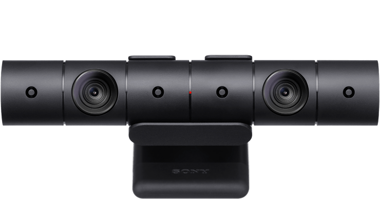

Accessoires PS VR
Préparez-vous pour la réalité virtuelle et donnez une nouvelle dimension à vos expériences grâce aux gammes d'accessoires et périphériques PlayStation VR.
ACCESSOIRE NÉCESSAIRE POUR LE PS VR
PlayStation Camera
Le suivi ultra-précis du PlayStation VR est rendu possible par la PlayStation Camera. Les deux objectifs servant à détecter la profondeur de champ suivent chaque mouvement du casque PS VR, de la manette DUALSHOCK 4 ou de la manette de détection de mouvements PlayStation Move et reproduisent fidèlement ces actions dans la réalité virtuelle, pour une immersion exceptionnelle.
PlayStation Move
Conçues pour vous offrir une immersion intuitive dans des mondes virtuels, les manettes de détection de mouvements PlayStation Move vous permettent d'interagir sans peine avec un environnement en réalité virtuelle. Avec une manette dans chaque main, mimez des gestes du quotidien pour ressentir une impression de présence incroyable dans les jeux compatibles PlayStation VR.
Manette de visée PS VR
Profitez d'une excellente précision dans vos jeux de tir compatibles PS VR grâce à cette manette avancée, conçue spécifiquement pour le PlayStation VR. Découvrez comment la manette de visée PS VR se transforme en arme dans votre monde virtuel : explorez la nouvelle portée offerte, ouvrez le feu avec une précision incroyable et ressentez dans vos mains le recul et les vibrations.